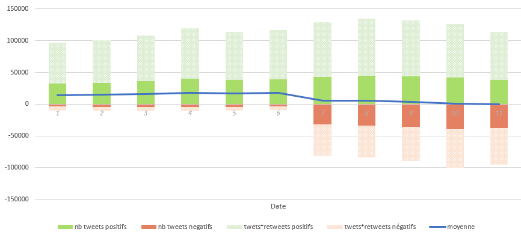

Trendr
Home
(current)
Pepsi
(current)
Coca-Cola
Fanta
Orangina
Polarité des tweets dans le temps

Hashtags associés
Popularité moyenne des tweets selon la polarité
Mots-clés associés
aux tweets positifs
Mots-clés associés
aux tweets négatifs